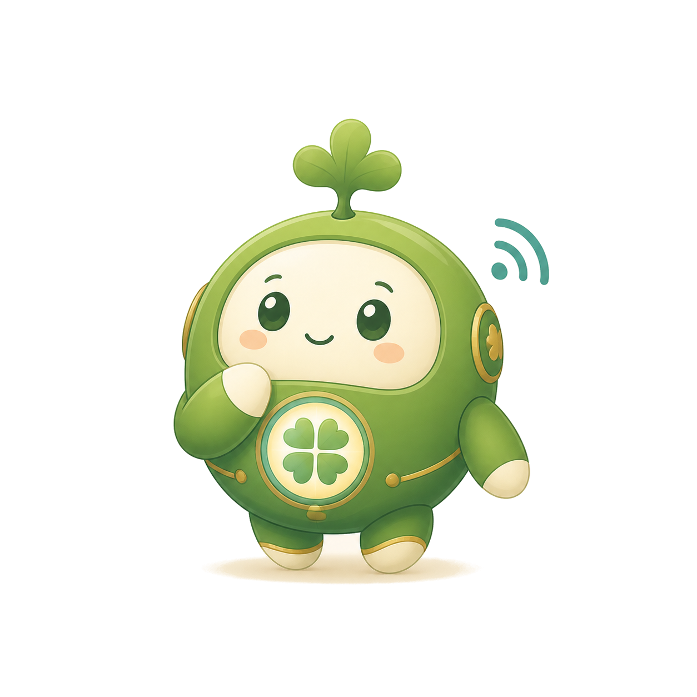

今天，孩子親手做一個「考自己」的遊戲

AI 陪我學，不替我寫。
01🍀 Learn AI with Tarshar今天最重要的一條線：手機在孩子手上，家長動口不動手
孩子做決定，AI 幫忙發問。
03🍀 Learn AI with Tarshar四步做出第一版——孩子的筆跡，是今天的思考證據
挑來源卡：選 1–2 張詩詞卡，拍照給 AI
🗣️「先把讀到的詩逐字列出來讓我核對」逐字核對：對著卡片看，一個字一個字對
🗣️ 全對才說「沒錯」；有錯就指出來寫護照：在護照寫下「我想改的玩法」
✏️ 先寫、比讚，才可以輸入貼咒語：複製基底咒語，送出等 1–3 分鐘
✅ 出現可以玩的「預覽」才算完成先想、先寫，再對 AI 說。
08🍀 Learn AI with Tarshar